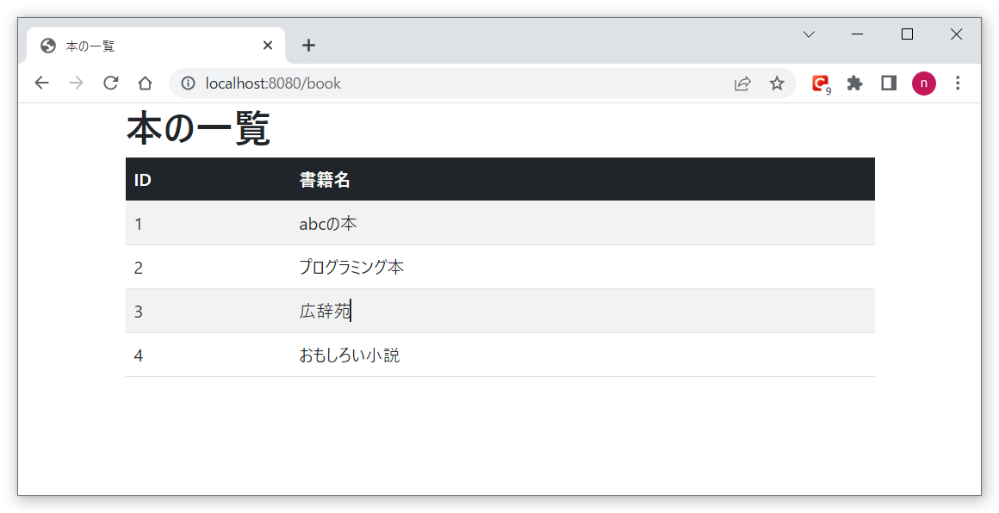
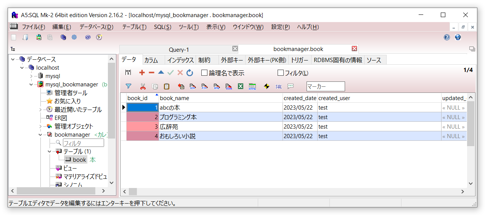

本を管理するWebアプリ
SpringBootとMybatisを使用して、本の一覧画面を表示します。
以下が画面レイアウトです。
以下がbookテーブルの内容です。
bookテーブルに登録されている本の一覧を、画面に表示するシンプルな構成です。
ソースファイルは以下からダウンロードして下さい。
Mysqlのインストール
データベースは、MySQLを使用します。
インストール方法については、ネット上に分かりやすいものが多数ありますので、
そちらを参考にしてください。
mysqlのインストール方法
MySqlとアプリの接続情報は以下に記載しています。
spring.datasource.url=jdbc:mysql://localhost:3306/bookmanager
spring.datasource.username=bookmanager
spring.datasource.password=pass
mybatis.configuration.map-underscore-to-camel-case=true
テーブル作成クエリとデータ登録クエリは以下に用意しています。
-- 本
--* BackupToTempTable
drop table book cascade;
--* RestoreFromTempTable
create table book (
book_id INT not null AUTO_INCREMENT comment '本ID'
, book_name VARCHAR(512) comment '本名称'
, created_date DATE comment '作成日'
, created_user VARCHAR(256) comment '作成者'
, updated_date DATE comment '更新日'
, updated_user VARCHAR(256) comment '更新者'
, constraint book_PKC primary key (book_id)
) comment '本' ;
insert into bookmanager.book(book_name,created_date,created_user,updated_date,updated_user) values
('abcの本',now(),'test',null,null)
, ('プログラミング本',now(),'test',null,null)
, ('広辞苑',now(),'test',null,null)
, ('おもしろい小説',now(),'test',null,null);
本の名前は、なんでもOKです。好みのものに変えてください。レコード件数も何件でもOKです。
ソースについて
SpringBoot部分のControllerクラスです。
package com.bookmanager.book.controller;
import java.util.List;
import org.springframework.beans.factory.annotation.Autowired;
import org.springframework.boot.autoconfigure.security.SecurityProperties.User;
import org.springframework.stereotype.Controller;
import org.springframework.ui.Model;
import org.springframework.web.bind.annotation.GetMapping;
import org.springframework.web.bind.annotation.ModelAttribute;
import org.springframework.web.bind.annotation.RequestMapping;
import com.bookmanager.book.entity.Book;
import com.bookmanager.book.service.BookService;
@Controller
@RequestMapping("/book")
public class BookController {
@Autowired
BookService BookService;
@GetMapping
private String list(@ModelAttribute User user, Model model) {
List bookList = BookService.search();
model.addAttribute("bookList", bookList);
return "book/list";
}
}
サービスクラスです。
package com.bookmanager.book.service;
import java.util.List;
import org.springframework.beans.factory.annotation.Autowired;
import org.springframework.stereotype.Service;
import com.bookmanager.book.entity.Book;
import com.bookmanager.book.repository.BookMapper;
@Service
public class BookService {
@Autowired
BookMapper bookMapper;
public List search() {
return bookMapper.search();
}
}
MySQLと連携を行う部分のリポジトリクラスです。
package com.bookmanager.book.repository;
import java.util.List;
import org.apache.ibatis.annotations.Mapper;
import com.bookmanager.book.entity.Book;
@Mapper
public interface BookMapper {
List search();
}
SQLクエリ発行部分のXMLファイルです。
<?xml version="1.0" encoding="UTF-8" ?>
<!DOCTYPE mapper
PUBLIC "-//mybatis.org//DTD Mapper 3.0//EN"
"http://mybatis.org/dtd/mybatis-3-mapper.dtd">
<mapper namespace="com.bookmanager.book.repository.BookMapper">
<select id="search" resultType="com.bookmanager.book.entity.Book">
SELECT * FROM book
order by book_id
</select>
</mapper>
本のエンティティクラスです。
package com.bookmanager.book.entity;
import lombok.Data;
@Data
public class Book {
private Integer bookId;
private String bookName;
}
画面（フロント）側の一覧画面ソースです。
<!DOCTYPE html>
<html lang="ja">
<head>
<meta charset="utf-8">
<meta name="viewport" content="width=device-width, initial-scale=1">
<title>本の一覧</title>
<link href="https://cdn.jsdelivr.net/npm/bootstrap@5.0.2/dist/css/bootstrap.min.css" rel="stylesheet"
integrity="sha384-EVSTQN3/azprG1Anm3QDgpJLIm9Nao0Yz1ztcQTwFspd3yD65VohhpuuCOmLASjC" crossorigin="anonymous">
</head>
<body>
<div class="container">
<h1>本の一覧</h1>
<script src="https://cdn.jsdelivr.net/npm/bootstrap@5.0.2/dist/js/bootstrap.bundle.min.js"
integrity="sha384-MrcW6ZMFYlzcLA8Nl+NtUVF0sA7MsXsP1UyJoMp4YLEuNSfAP+JcXn/tWtIaxVXM"
crossorigin="anonymous"></script>
<div th:text="${deleteError}"></div>
<div th:if="${bookList}">
<div th:if="${bookList.size() == 0}">登録している本はありません。</div>
<div th:if="${bookList.size() > 0}">
<table class="table table-striped">
<thead class="table-dark">
<tr>
<th scope="col">ID</th>
<th scope="col">書籍名</th>
</tr>
</thead>
<tbody>
<tr th:each="book : ${bookList}" th:object="${book}">
<td scope="row" th:text="${book.bookId}"></td>
<td scope="row" th:text="${book.bookName}"></td>
</tr>
</tbody>
</table>
</div>
</div>
</div>
</body>
</html>
</body>
</html>
起動方法について
BookmanagerApplication.java
を実行し、SpringBootを起動します。
http://localhost:8080/bookにアクセスし、Bookテーブルに登録されている本の一覧が、一覧画面に表示されることを確認します。
以上です。いかがだったでしょうか。起動しましたでしょうか。
Bookテーブルの内容を変えて、それが画面に反映されていることを確認してみてください。